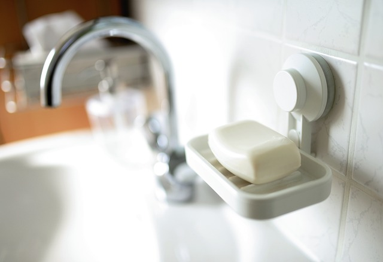

화장실을 정리하는 작은 팁들
1. 서랍장의 수납 바구니를 통일하자: 통일된 수납 바구니를 사용하면 훨씬 깔끔해 보이는 효과를 얻을 수 있다.
2. 라벨링을 하자: 수납 바구니나, 각종 용품에 라벨을 붙여두면 정리할때 도움이 된다.
3. 물품들의 영역을 정하자: 칫솔은 칫솔끼리, 화장지는 화장지끼리 모아두는게 보기도 좋고 찾기 쉽다. 기본이지만 간과하기 쉬운 사실이다.
4. 세면대 욕실용품은 바닥에서 떨어뜨리자: 세면대는 물이 닿을 일이 매우 많아 물때가 낄일이 많다.
5. 청소도구, 슬리퍼 등도 바닥에서 멀리하자: 4번과 같은 이유다. 걸이를 사서 걸어놓거나 하면 물때 걱정을 덜 수 있다.
6. 숨은 공간을 활용하자: 구석이나 변기 옆 비는 공간 등 화장실에는 꽤 남는 공간이 많다. 그곳을 활용하면 정리가 용이하다.